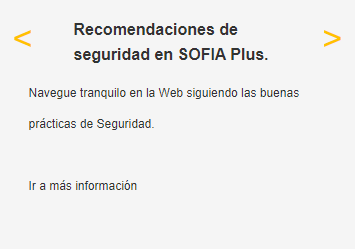
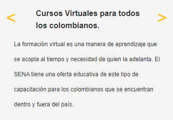

Somos un establecimiento público del orden nacional, con personería jurídica, patrimonio propio e independiente, y autonomía administrativa; Adscrito al Ministerio del Trabajo de Colombia. Ofrece formación gratuita a millones de colombianos que se benefician con programas técnicos, tecnológicos y complementarios que enfocados en el desarrollo económico, tecnológico y social del país, entran a engrosar las actividades productivas de las empresas y de la industria, para obtener mejor competitividad y producción con los mercados globalizados.


Historia
Nacimos durante el gobierno de la Junta Militar -posterior a la renuncia del General Gustavo Rojas Pinilla-, mediante el Decreto Ley 118, del 21 de junio de 1957. Su función, definida en el Decreto 164 del 6 de agosto de 1957, fue brindar formación profesional a trabajadores, jóvenes y adultos de la industria, el comercio, el campo, la minería y la ganadería. Su creador fue Rodolfo Martínez Tono.
Así mismo, siempre buscó proporcionar instrucción técnica al empleado, formación complementaria para adultos, y ayudarles a los empleadores y trabajadores a establecer un sistema nacional de aprendizaje. La Entidad que tiene una estructura tripartita, -en la cual participarían trabajadores, empleadores y Gobierno-, se llamó Servicio Nacional de Aprendizaje (SENA), que se conserva en la actualidad y que muchos años después, busca seguir conquistando nuevos mercados, suplir a las empresas de mano calificada utilizando para ello métodos modernos y lograr un cambio de paradigma en cada uno de los procesos de la productividad.